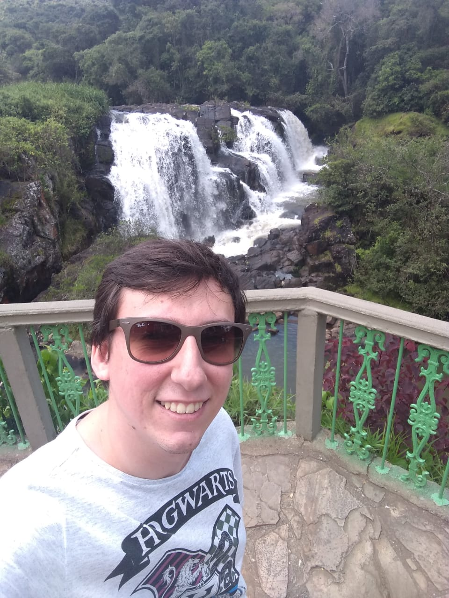

|  |
Nome: Yago Teixeira de Andrade
Brasileiro, solteiro, 25 anos
Data de Nascimento: 16/01/1995 - Naturalidade: Ribeirão Preto/SP
Residência: Rua João Nantes Júnior, 1076
Ribeirânia - Ribeirão Preto/SP
Telefone: (16)98827-2877
e-mail: yagoandrade51@gmail.com
|